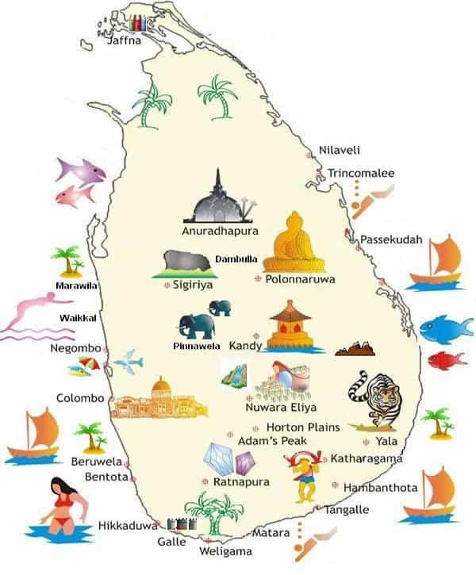
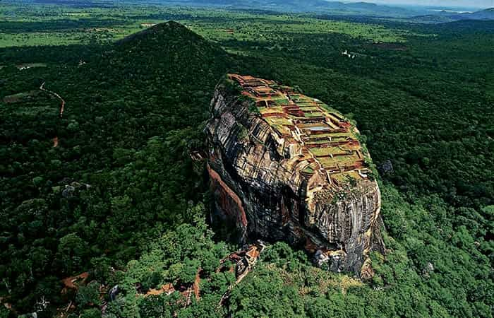
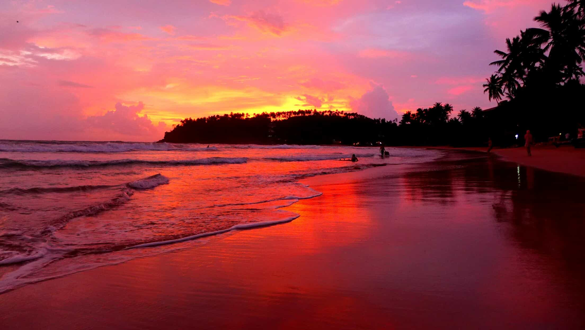
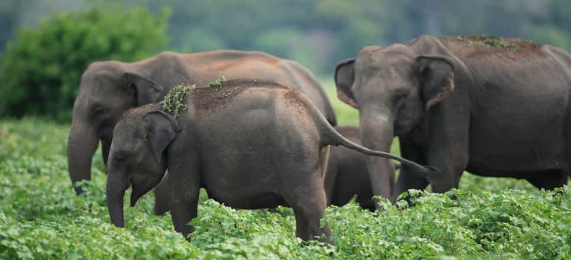
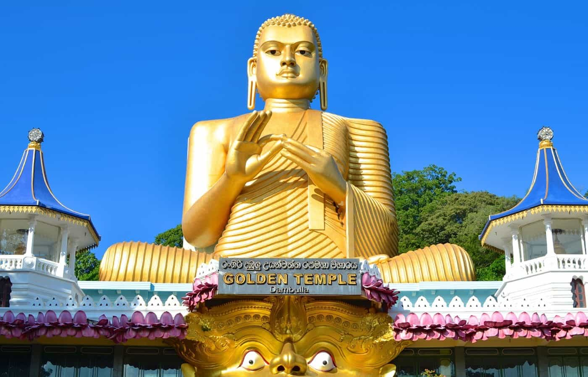

In the poor and largely underdeveloped region South Asia (India, Afghanistan, Pakistan, Bangladesh, Nepal, Bhutan and Sri Lanka), Sri Lanka stands out as perhaps the least materially and culturally repulsive of them all. However, even though this is the case if one looks at these countries in their entirety, it is still a relatively poor emerging market. Monthly gross income is roughly 84 700 Rupee, about 593 US dollar.
This implies that the average Lankese person can never afford to travel and often ends up working either in agriculture (tea, spices, grainseed, sugarcane, rubber and so forth) or simple industries (telecommunications, insurance, banking, tourism and so on).
From a tourist perspective, another consequence is a low level of infrastructure. Sri Lanka is not a big island and a distance that would have taken less than two hours in Western Europe or East Asia takes 4-6 hours there. Some trains which travel across mountainous areas are incredibly slow. This leads to a lot of wasted time on crowded trains, busses and taxis.
However, the southwest coast, where places such as Galle, Hikkaduwa, and Mirissa Beach are located, have faster trains, and if one can afford to hire a driver for a couple of days, some distances can be dealt with at a somewhat faster pace.
Another negative thing about Sri Lanka is that there are pretty much zero attractive girls within the Lankese population. I always keep my eyes open but could still not see a single local hottie during two weeks. They are not particularly fat, but that is pretty much their only advantage. Therefore one must go to more touristic spots in order to meet Western or other Asian women instead. For instance, in Hikkaduwa I met an attractive German girl, of partially Serbic descent, whom I number closed after five minutes of chat in a local gym.
Thus this place is obviously not a high-tech poosy paradise, but if one keeps that in mind and find ways to work around the logistic and even hedonistic obstacles, then a number of other advantages will manifest themselves.

1. Stunning scenery
The scenery is stunning in many places in Sri Lanka. For instance, one early morning me and a friendly guy who worked at my guest house went to the top of the Lion Rock in Sigiriya to catch sight of a view I will never forget.
Ella, Dambulla Cave Temple, Galle, Mirissa and Yala National Park do likewise offer majestic views.

2. Breathtaking beaches
One of the best beaches I have visited is located in Grand Bahama, Bahamas, so an American who only wants to relax in a pleasant environment might want to go there instead. Many of the beaches along the southwest coast of Sri Lanka cannot be considered prettier, although generally of high standard.
However, Mirissa Beach is breathtakingly beautiful, especially around sunset and at night. So it might actually be worth to go there on a more exotic honeymoon if one has the chance. I was there alone and did not meet anyone, and albeit it was much pleasant to contemplate while walking along the stretches of sand numerous times, I wish I could have spent that time with a girl.

3. A diverse and fascinating fauna
In Mirissa Beach, a traveler can also do whale watching, which is a fascinating experience since one can likely see a significant number of blue whales. I was particularly lucky at this time and saw multiple giant whales, as well as dolphins and other marine animals.
Within just one or two weeks, one can spot blue whales, Sri Lankan leopards, Indian elephants, monkeys (Tuffed grey langur), mongoose, Indian crested porcupine, as well as numerous fish species while snorkeling or scuba diving.
My best experience in this respect was when my expedition car was hunted down by an elephant mother which vehemently protected her offspring near Sigiriya.

4. Theravada Buddhism
Historically and presently, Sri Lanka is an important place for Theravada Buddhism. Around 250 BCE the only surviving school of Buddhism arrived on Ceylon, and eventually this branch spread to Burma in the eleventh century, and later also to Thailand, Laos and Cambodia. Therevada is more conservative than Mahayana Buddhism, and this influences the larger society as well.
For historical sites, Dambulla Cave Temple is an excellent point of departure. Here some of the most impressive Buddha statues in the world are located.

5. Genuinely kind people
One meets kind people pretty much everywhere around the globe, but this often comes with an even greater number of annoying opportunists or worse. Often a nice person within the tourism industry, whether it be Malta or Indonesia, sooner or later tends to convey a message of at least semi-imposed recommendation. In other words, they make you feel obliged to support their family which happens to be willing to take you on a trip, or recommend their particular guest house, hostel or hotel. Not that it is a big thing but it signifies a transition to a Gesellschaft society with merely rational mutual agreements and transactions rather than genuine altruism involved.
In Sri Lanka one finds very little of that, though it often lean towards a traditional Gemainschaft, to the extent to which Ferdinand Tönnies’ concept conforms to non-European cultures. If you prefer to travel in a more expensive way then you will of course pay accordingly, but as long as you travel in a budget style, no one will bother you with drugs, hoes or knick-knacks. Street vendors are pretty much absent in all of the country, and if some offer anything they will likely act very nice and polite. For instance, I was convinced to go on a traditional show, with Hindu elements, in the small city of Kandy, which did not cost much.
As a young married Lankese man told me when he explained why he wanted very little if anything in return for driving me with motorbike to the starting point, as well as following me all the way to the top of Lion Rock in Sigiriya: “As a Buddhist I believe in Karma and compassion. I have no desire for your money.”
With the government’s 26-year conflict with the Liberation Tigers of Tamil Eelam and the fact that human nature is pretty much the same regardless of place kept in mind, I am not suggesting that Lankese people necessarily are better than others. Still ethics do matter.

In summary
Like I stressed in the preamble of this article, there are palpable flaws in Sri Lanka with regard to infrastructure and female talent in particular. If one also takes flight distances into account it could be questionable for an American to go all the way there at all, but those who come across will experience a beautiful tradition-leaning country which offers great scenery, beaches and wildlife.
Read More: 4 Reasons You Should Make A Trip To The Country Of Georgia